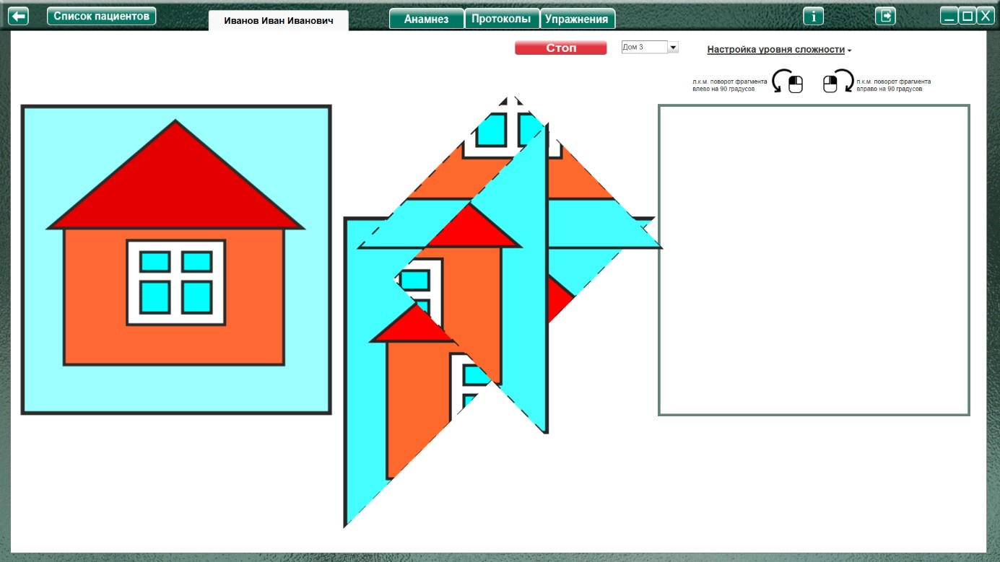
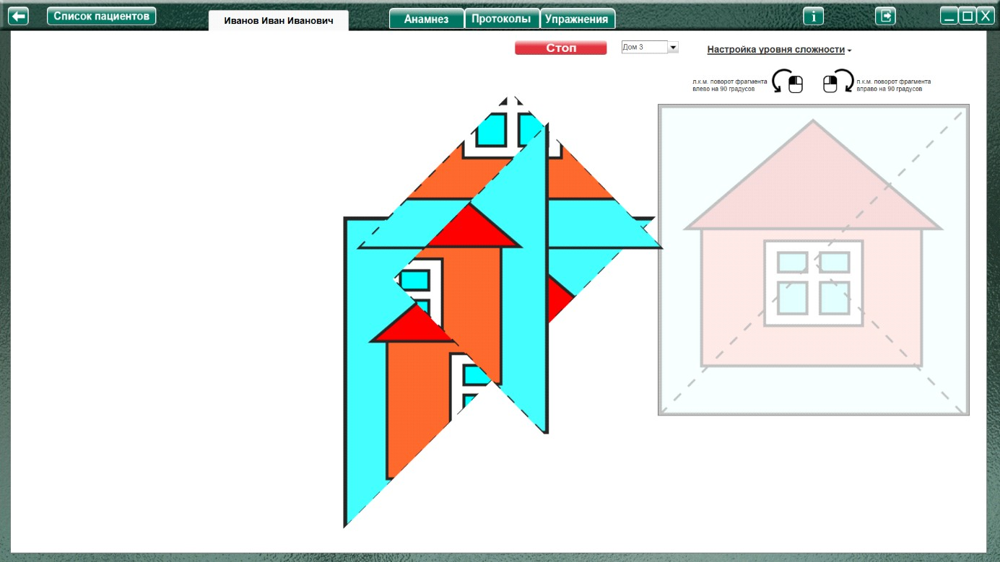
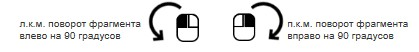
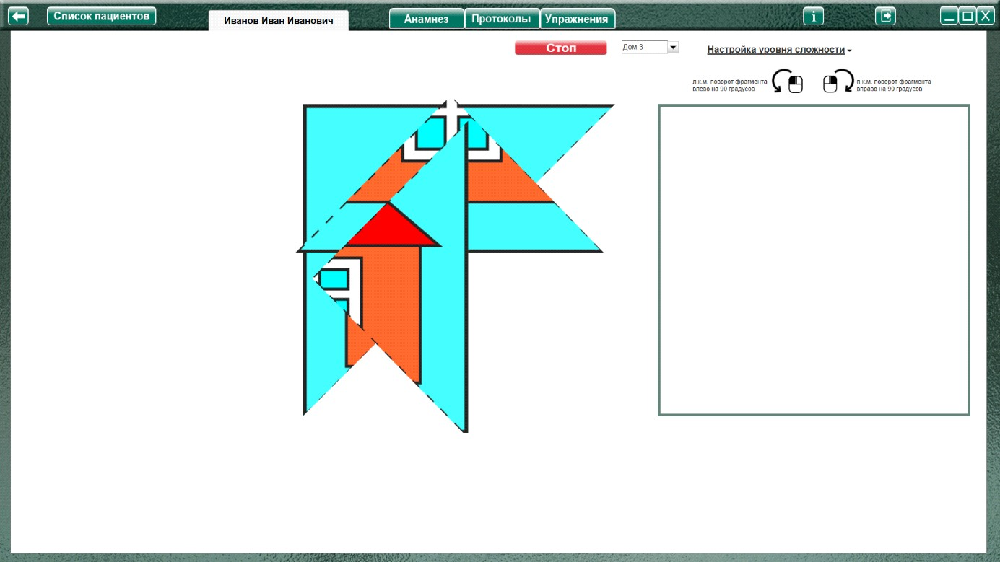

Методика «Разрезанные картинки» (Фатихова Л.Ф.)
Процедура проведения.
Ребенку последовательно предлагаются для складывания части разрезанных картинок. Части выкладываются перед ребенком в таком порядке, чтобы их нужно было не просто сдвинуть, а предварительно придать им нужное положение. Во всех случаях фигуры, которые должен сложить ребенок, не называются. Предлагается инструкция жестовая и словесная: «Сложи эти части, посмотри, что у тебя получится, какая картинка».
Анализируемые показатели и нормативы выполнения
I уровень – действия ребенка по складыванию картинки носят непродуктивный хаотичный характер.
II уровень – ребенок складывает картинку, активно пользуясь методом проб.
III уровень – ребенок собирает картинку, действуя на уровне зрительного соотнесения.
Если ребенок действует с помощью зрительного соотнесения и адекватно выполняет задание на сложение частей картинки в целое, его результат оценивается в зависимости от того, из скольких частей
состоит разрезанная картинка. Картинка:
из 2 частей - в 2 балла,
из 3 – в 3 балла,
из 4 – в 4 балла,
из 5 – в 5 баллов,
из 6 – в 6 баллов.
Максимальное количество баллов за сложение всех картинок – 20 баллов.
В случае использования проб результат выполнения снижается на 0,5 балла, использование помощи
экспериментатора также уменьшает результат на 0,5 балла за каждый вид помощи.
Анализ результатов
Группы детей |
Баллы |
Нормально развивающиеся дошкольники |
17-20 |
Дошкольники с задержкой психического развития |
10-18 |
Дошкольники с умственной отсталостью |
0-12 |
Нормально развивающиеся дошкольники все без исключения понимают задание и действуют адекватно, демонстрируя, как правило, III уровень выполнения задания, т.е. используя метод
зрительного соотнесения. Метод проб начинает использоваться дошкольниками данной категории при усложнении задания, т.е. увеличении количества разрезов (картинки из 5 и 6 частей).
Дошкольники с ЗПР понимают поставленную задачу и демонстрируют при синтезировании картинок из 2 и 3 частей, как правило, III уровень выполнения, однако при увеличении количества разрезов начинают использовать метод проб, т.е. выполняют задание на II уровне. В зависимости от уровня сформированности перцептивной деятельности дошкольники с ЗПР нуждаются в первом виде помощи (предъявлении цельного образца) или использовании трафарета. На результатах выполнения задания сказывается работоспособность – при утомляемости ребенка продуктивность деятельности может резко снижаться.
Дошкольники с умственной отсталостью показывают разный уровень способности к синтезированию разрезной картинки – от полной неспособности к выполнению задания (I уровень) до активного использования метода проб (II уровень). Метод проб при этом несовершенен, дети легко «соскальзывают» на уровень бесцельного манипулирования частями разрезных картинок. На уровне зрительного соотнесения (III уровень) дети с легкой умственной отсталостью выполняют лишь простейшее задание на синтез картинки из двух частей, а все остальные картинки складывают с той или иной дозой помощи взрослого. При этом наибольшей продуктивностью обладает третий вид помощи – предъявление частей разрезанных фигур в ракурсе, не требующем их переориентации в пространстве.
Оценка результатов
Характер деятельности ребенка:
Виды возможной помощи:
Стимулирующая помощь
Направляющая помощь:
Обучающая помощь:
Протокол фиксации результатов исследования
_________________________________ _______________
ФИО Дата рождения
Методика |
Разрезанные картинки |
|||
Автор методики (адаптации, модификации) |
Фатихова Л.Ф. |
|||
Цель: |
Изучение уровня и особенностей сформированности наглядно-действенно-образного мышления; выявление возможностей к перцептивному моделированию; выявление способностей к соотнесению частей и целого и их пространственного расположения; изучение способности к переносу действия в новые более сложные условия при решении наглядно-действенных задач. |
|||
Дата / специалист |
||||
Результат: баллы (макс.) / вывод об уровне развития |
||||
Примечание |
||||
Процесс выполнения диагностического задания |
||||
Изображение |
Характер деятельности ребенка |
Виды помощи |
Баллы |
|
Мяч из 2 частей |
||||
Домик из 3 частей |
||||
Мишка из 4 частей |
||||
Машинка из 5 частей |
||||
Чайник из 6 частей |
||||
Итоговая оценка |
||||

Логика заполнения протокола
Заполняется автоматически
Имя специалиста – логин при входе в программу.
Дата –дата и время прохождения упражнения в формате дд.мм.гггг.
Результат: баллы (макс.) – кол-во баллов дублируется из ячейки «Итоговая оценка».
Ячейки «Характер деятельности ребенка», «Виды помощи» заполняются в зависимости от выбора специалиста в поле «Оценка результатов» либо самостоятельно.
Итоговая оценка – сумма баллов за все упражнения. Заполняется после формирования протокола по всем выполненным заданиям по нажатию кнопки «Подвести итог».
Остальные ячейки заполняются специалистом самостоятельно. При внесении не целого количества баллов, для разделения целого и десятичного значения использовать запятую. Например: 2,5
Описание элементов управления.
Меню настройки уровня сложности

При нажатии открывает окно, для выбора настроек необходимого уровня сложности


При выборе данного пункта, с начала или во время выполнения упражнения, в левой части экрана выводится подсказка «Эталонное изображение» (рисунок БЕЗ линий разреза).
При выборе данного пункта, в рабочем поле выводится трафарет для сборки картинки.

Становится «доступным» часть меню для выбора поворота фрагментов, состоящая из пунктов - выпадающих меню:
Фрагментов, повернутых на 90 о (по умолчанию «1»)
Фрагментов, повернутых на 180 о (по умолчанию «1»)
Фрагменты на 90 градусов поворачиваются влево/вправо через один.
Например:
Если выбрано фрагментов, повернутых на 90 градусов 1, то он будет повернут влево.
Если 2 – то один влево, второй вправо.
Если 3 – то 1й влево, 2й вправо, 3й снова влево.
И т.д.
Подсказки (напоминания) для вращения фрагментов

Напоминают (уведомляют), что клик левой кнопкой мыши (л.к.м.) по фрагменту поворачивает выбранный фрагмент на 90 О влево, а клик правой кнопкой мыши (п.к.м.) поворачивает выбранный фрагмент на 90 О вправо.
Выполнение упражнения
Выбрать задание в меню, и нажать кнопку «Начать упражнение» (запуская секундомер, и открывая задание на весь экран)

Выполнить задание согласно пункту «Процедура проведения». На рабочем поле (чистый квадрат справа) собирается картинка путем перемещения фрагментов мышкой, с зажатой левой кнопкой.
Если фрагмент повернут, то клик левой кнопкой мыши (л.к.м.) по фрагменту поворачивает выбранный фрагмент на 90 О влево, а клик правой кнопкой мыши (п.к.м.) поворачивает выбранный фрагмент на 90 О вправо.
По окончании выполнения нажать кнопку «Стоп», открывая поле оценки результата. При необходимости выбрать характер деятельности, виды помощи, и нажать кнопку «Сформировать протокол». Произвести оценку результата (заполнить оставшиеся ячейки протокола) согласно пункту «Анализируемые показатели и нормативы выполнения».
Только после формирования протокола по выполненному заданию можно приступить к выполнению следующего!
После формирования протокола по всем выполненным заданиям, нажать кнопку «Подвести итог» под протоколом, чтобы заполнить ячейку «Итоговая оценка».